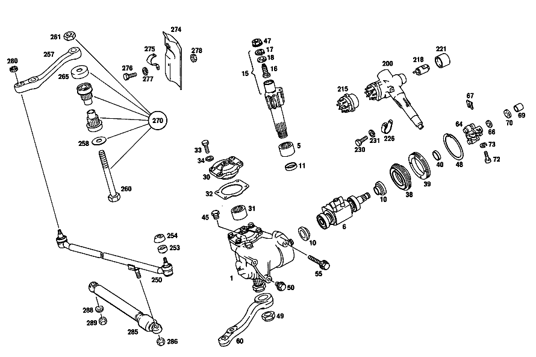

| № | Артикул | Название | Кол. | Примечание | Ограничение |
|---|---|---|---|---|---|
| 1 | A 115 460 21 01 | Рулевой механизм | 1 | Рулевое управление: Влево [100] UP TO CHASSIS: 011: 10/50,12/52 111381 011: 20/60,22/62 111334 007,008,015,017: 10/50,12/52 264453 007,008,015,017: 20/60,22/62 264100 060: 10/50,12/52 124096 060: 20/60,22/62 123757 062: 10/50,12/52 109096 062: 20/60,22/62 109078 FROM CHASSIS SEE UNIT SPARE PARTS LIST [697] ДЕТАЛЬ ПОСТАВЛЯЕТСЯ ТОЛЬКО/ИЛИ ТАКЖЕ КАК ЗАП.ЧАСТЬ | |
| 1 | A 115 460 22 01 | РУЛЕВОЕ УПРАВЛЕНИЕ | 1 | Рулевое управление: Вправо [100] UP TO CHASSIS: 011: 10/50,12/52 111381 011: 20/60,22/62 111334 007,008,015,017: 10/50,12/52 264453 007,008,015,017: 20/60,22/62 264100 060: 10/50,12/52 124096 060: 20/60,22/62 123757 062: 10/50,12/52 109096 062: 20/60,22/62 109078 FROM CHASSIS SEE UNIT SPARE PARTS LIST | |
| 5 | A 001 981 88 10 | - Игольчатый подшипник | 1 | [100] UP TO CHASSIS: 011: 10/50,12/52 111381 011: 20/60,22/62 111334 007,008,015,017: 10/50,12/52 264453 007,008,015,017: 20/60,22/62 264100 060: 10/50,12/52 124096 060: 20/60,22/62 123757 062: 10/50,12/52 109096 062: 20/60,22/62 109078 FROM CHASSIS SEE UNIT SPARE PARTS LIST | |
| 6 | A 115 460 10 18 | - ГАЙКА РУЛ.ПЕРЕДАЧИ | 1 | Рулевое управление: Влево [100] UP TO CHASSIS: 011: 10/50,12/52 111381 011: 20/60,22/62 111334 007,008,015,017: 10/50,12/52 264453 007,008,015,017: 20/60,22/62 264100 060: 10/50,12/52 124096 060: 20/60,22/62 123757 062: 10/50,12/52 109096 062: 20/60,22/62 109078 FROM CHASSIS SEE UNIT SPARE PARTS LIST | |
| 10 | A 000 981 50 27 | - Подшипник | 2 | [100] UP TO CHASSIS: 011: 10/50,12/52 111381 011: 20/60,22/62 111334 007,008,015,017: 10/50,12/52 264453 007,008,015,017: 20/60,22/62 264100 060: 10/50,12/52 124096 060: 20/60,22/62 123757 062: 10/50,12/52 109096 062: 20/60,22/62 109078 FROM CHASSIS SEE UNIT SPARE PARTS LIST | |
| 11 | A 002 997 72 46 | - Уплотнительное кольцо | 1 | [100] UP TO CHASSIS: 011: 10/50,12/52 111381 011: 20/60,22/62 111334 007,008,015,017: 10/50,12/52 264453 007,008,015,017: 20/60,22/62 264100 060: 10/50,12/52 124096 060: 20/60,22/62 123757 062: 10/50,12/52 109096 062: 20/60,22/62 109078 FROM CHASSIS SEE UNIT SPARE PARTS LIST | |
| 15 | A 115 460 00 11 | - ВАЛ РУЛЕВОЙ | 1 | [100] UP TO CHASSIS: 011: 10/50,12/52 111381 011: 20/60,22/62 111334 007,008,015,017: 10/50,12/52 264453 007,008,015,017: 20/60,22/62 264100 060: 10/50,12/52 124096 060: 20/60,22/62 123757 062: 10/50,12/52 109096 062: 20/60,22/62 109078 FROM CHASSIS SEE UNIT SPARE PARTS LIST [402] БОЛЬШЕ НЕ ПОСТАВЛЯЕТСЯ | |
| 16 | A 115 462 02 71 | - Палец | 1 | [100] UP TO CHASSIS: 011: 10/50,12/52 111381 011: 20/60,22/62 111334 007,008,015,017: 10/50,12/52 264453 007,008,015,017: 20/60,22/62 264100 060: 10/50,12/52 124096 060: 20/60,22/62 123757 062: 10/50,12/52 109096 062: 20/60,22/62 109078 FROM CHASSIS SEE UNIT SPARE PARTS LIST | |
| 17 | N 000984 020000 | - Стопорное кольцо | 1 | [100] UP TO CHASSIS: 011: 10/50,12/52 111381 011: 20/60,22/62 111334 007,008,015,017: 10/50,12/52 264453 007,008,015,017: 20/60,22/62 264100 060: 10/50,12/52 124096 060: 20/60,22/62 123757 062: 10/50,12/52 109096 062: 20/60,22/62 109078 FROM CHASSIS SEE UNIT SPARE PARTS LIST | |
| 18 | A 115 462 02 75 | - Диск | 1 | ПО НЕОБХОДИМОСТИ 3.00 MM [100] UP TO CHASSIS: 011: 10/50,12/52 111381 011: 20/60,22/62 111334 007,008,015,017: 10/50,12/52 264453 007,008,015,017: 20/60,22/62 264100 060: 10/50,12/52 124096 060: 20/60,22/62 123757 062: 10/50,12/52 109096 062: 20/60,22/62 109078 FROM CHASSIS SEE UNIT SPARE PARTS LIST | |
| 30 | A 115 460 08 14 | - КРЫШКА | 1 | [100] UP TO CHASSIS: 011: 10/50,12/52 111381 011: 20/60,22/62 111334 007,008,015,017: 10/50,12/52 264453 007,008,015,017: 20/60,22/62 264100 060: 10/50,12/52 124096 060: 20/60,22/62 123757 062: 10/50,12/52 109096 062: 20/60,22/62 109078 FROM CHASSIS SEE UNIT SPARE PARTS LIST [402] БОЛЬШЕ НЕ ПОСТАВЛЯЕТСЯ | |
| 31 | A 001 981 88 10 | - Игольчатый подшипник | 1 | [100] UP TO CHASSIS: 011: 10/50,12/52 111381 011: 20/60,22/62 111334 007,008,015,017: 10/50,12/52 264453 007,008,015,017: 20/60,22/62 264100 060: 10/50,12/52 124096 060: 20/60,22/62 123757 062: 10/50,12/52 109096 062: 20/60,22/62 109078 FROM CHASSIS SEE UNIT SPARE PARTS LIST | |
| 32 | A 115 461 01 80 | - уплотнение | 1 | [100] UP TO CHASSIS: 011: 10/50,12/52 111381 011: 20/60,22/62 111334 007,008,015,017: 10/50,12/52 264453 007,008,015,017: 20/60,22/62 264100 060: 10/50,12/52 124096 060: 20/60,22/62 123757 062: 10/50,12/52 109096 062: 20/60,22/62 109078 FROM CHASSIS SEE UNIT SPARE PARTS LIST | |
| 33 | A 004 990 07 01 | - болт | 4 | Рулевое управление: Влево [100] UP TO CHASSIS: 011: 10/50,12/52 111381 011: 20/60,22/62 111334 007,008,015,017: 10/50,12/52 264453 007,008,015,017: 20/60,22/62 264100 060: 10/50,12/52 124096 060: 20/60,22/62 123757 062: 10/50,12/52 109096 062: 20/60,22/62 109078 FROM CHASSIS SEE UNIT SPARE PARTS LIST [005] FROM CHASSIS 063987-123906 | |
| 33 | A 004 990 07 01 | болт | 4 | Рулевое управление: Вправо [100] UP TO CHASSIS: 011: 10/50,12/52 111381 011: 20/60,22/62 111334 007,008,015,017: 10/50,12/52 264453 007,008,015,017: 20/60,22/62 264100 060: 10/50,12/52 124096 060: 20/60,22/62 123757 062: 10/50,12/52 109096 062: 20/60,22/62 109078 FROM CHASSIS SEE UNIT SPARE PARTS LIST [006] FROM CHASSIS 065179-123906 | |
| 34 | N 000433 008406 | - Шайба | 4 | Рулевое управление: Влево [100] UP TO CHASSIS: 011: 10/50,12/52 111381 011: 20/60,22/62 111334 007,008,015,017: 10/50,12/52 264453 007,008,015,017: 20/60,22/62 264100 060: 10/50,12/52 124096 060: 20/60,22/62 123757 062: 10/50,12/52 109096 062: 20/60,22/62 109078 FROM CHASSIS SEE UNIT SPARE PARTS LIST [005] FROM CHASSIS 063987-123906 | |
| 34 | N 000433 008406 | Шайба | 4 | Рулевое управление: Вправо [100] UP TO CHASSIS: 011: 10/50,12/52 111381 011: 20/60,22/62 111334 007,008,015,017: 10/50,12/52 264453 007,008,015,017: 20/60,22/62 264100 060: 10/50,12/52 124096 060: 20/60,22/62 123757 062: 10/50,12/52 109096 062: 20/60,22/62 109078 FROM CHASSIS SEE UNIT SPARE PARTS LIST [006] FROM CHASSIS 065179-123906 | |
| 38 | A 115 462 01 51 | - КОЛЬЦО | 1 | [417] БОЛЬШЕ НЕ ПОСТАВЛЯЕТСЯ, ЗАКАЗЫВАТЬ КОМПЛЕКТ ПОСТАВКИ [100] UP TO CHASSIS: 011: 10/50,12/52 111381 011: 20/60,22/62 111334 007,008,015,017: 10/50,12/52 264453 007,008,015,017: 20/60,22/62 264100 060: 10/50,12/52 124096 060: 20/60,22/62 123757 062: 10/50,12/52 109096 062: 20/60,22/62 109078 FROM CHASSIS SEE UNIT SPARE PARTS LIST | |
| 39 | A 115 462 01 34 | - Резьбовое кольцо | 1 | [100] UP TO CHASSIS: 011: 10/50,12/52 111381 011: 20/60,22/62 111334 007,008,015,017: 10/50,12/52 264453 007,008,015,017: 20/60,22/62 264100 060: 10/50,12/52 124096 060: 20/60,22/62 123757 062: 10/50,12/52 109096 062: 20/60,22/62 109078 FROM CHASSIS SEE UNIT SPARE PARTS LIST | |
| 40 | A 002 997 47 46 | - Уплотнительное кольцо | 1 | [100] UP TO CHASSIS: 011: 10/50,12/52 111381 011: 20/60,22/62 111334 007,008,015,017: 10/50,12/52 264453 007,008,015,017: 20/60,22/62 264100 060: 10/50,12/52 124096 060: 20/60,22/62 123757 062: 10/50,12/52 109096 062: 20/60,22/62 109078 FROM CHASSIS SEE UNIT SPARE PARTS LIST | |
| 45 | N 007604 012102 | - Резьбовая пробка | 1 | [100] UP TO CHASSIS: 011: 10/50,12/52 111381 011: 20/60,22/62 111334 007,008,015,017: 10/50,12/52 264453 007,008,015,017: 20/60,22/62 264100 060: 10/50,12/52 124096 060: 20/60,22/62 123757 062: 10/50,12/52 109096 062: 20/60,22/62 109078 FROM CHASSIS SEE UNIT SPARE PARTS LIST | |
| 47 | A 001 990 86 51 | - гайка | 1 | [100] UP TO CHASSIS: 011: 10/50,12/52 111381 011: 20/60,22/62 111334 007,008,015,017: 10/50,12/52 264453 007,008,015,017: 20/60,22/62 264100 060: 10/50,12/52 124096 060: 20/60,22/62 123757 062: 10/50,12/52 109096 062: 20/60,22/62 109078 FROM CHASSIS SEE UNIT SPARE PARTS LIST | |
| 48 | N 900055 080210 | - Стопорное кольцо | 1 | [100] UP TO CHASSIS: 011: 10/50,12/52 111381 011: 20/60,22/62 111334 007,008,015,017: 10/50,12/52 264453 007,008,015,017: 20/60,22/62 264100 060: 10/50,12/52 124096 060: 20/60,22/62 123757 062: 10/50,12/52 109096 062: 20/60,22/62 109078 FROM CHASSIS SEE UNIT SPARE PARTS LIST | |
| 49 | A 001 990 12 51 | - ГАЙКА | 1 | [402] БОЛЬШЕ НЕ ПОСТАВЛЯЕТСЯ | |
| 50 | A 115 990 19 01 | болт | 1 | ||
| 55 | A 115 990 21 01 | болт | 2 | ||
| 60 | A 115 463 07 01 | РЫЧАГ НА РУЛЕВОЙ КОЛОНКЕ | 1 | Рулевое управление: Влево [100] UP TO CHASSIS: 011: 10/50,12/52 111381 011: 20/60,22/62 111334 007,008,015,017: 10/50,12/52 264453 007,008,015,017: 20/60,22/62 264100 060: 10/50,12/52 124096 060: 20/60,22/62 123757 062: 10/50,12/52 109096 062: 20/60,22/62 109078 FROM CHASSIS SEE UNIT SPARE PARTS LIST | |
| 64 | A 115 460 05 10 | Муфта рулевого вала | 1 | ||
| 66 | A 136 990 95 40 | - ШАЙБА | 2 | [080] UP TO CHASSIS: 005,007,008,015,017 207357 011 101648 060 102313 062 101808 | |
| 67 | N 912002 010001 | - Механический фиксатор | 2 | [080] UP TO CHASSIS: 005,007,008,015,017 207357 011 101648 060 102313 062 101808 | |
| 69 | A 111 462 01 65 | - втулка | 2 | [080] UP TO CHASSIS: 005,007,008,015,017 207357 011 101648 060 102313 062 101808 | |
| 70 | A 111 990 30 40 | - ШАЙБА | 2 | [080] UP TO CHASSIS: 005,007,008,015,017 207357 011 101648 060 102313 062 101808 | |
| 72 | A 111 990 04 20 | БОЛТ | 2 | ||
| 73 | N 912006 008000 | Пружинное кольцо | 2 | ||
| 80 | A 115 460 31 16 | ТРУБЧАТ. СЕКЦИЯ РУЛ. КОЛ. | 1 | Рулевое управление: Влево [402] БОЛЬШЕ НЕ ПОСТАВЛЯЕТСЯ | |
| 90 | A 115 462 18 35 | Корпус подшипника | 1 | [093] FROM CHASSIS: 007,008,015,017 235920 011 106975 060 114910 062 106278 | |
| 91 | A 000 981 89 10 | ПОДШИПНИК ИГОЛЬЧАТЫЙ | - | ||
| 91 | A 018 981 61 10 | Игольчатый подшипник | 1 | ||
| 92 | N 000912 006064 | Винт | 4 | ||
| 93 | N 000137 006204 | Пружинная шайба | 4 | ||
| 94 | A 115 460 08 95 | ПАНЕЛЬ | 1 | Рулевое управление: Влево [402] БОЛЬШЕ НЕ ПОСТАВЛЯЕТСЯ | |
| 97 | A 115 995 05 35 | - ХОМУТ | 1 | ||
| 98 | N 000931 006159 | - Винт | 1 | ||
| 99 | N 000125 006421 | - Шайба | 1 | ||
| 100 | A 094 990 68 10 | - Пружинное кольцо | 1 | ||
| 101 | N 000934 006013 | - Гайка | - | ||
| 101 | N 304032 006008 | - Шестигранная гайка | 1 | ||
| 115 | A 115 460 83 09 | ВАЛ РУЛЕВОЙ | 1 | ||
| 116 | A 116 462 00 60 | - Уплотнительное кольцо | 1 | ||
| 117 | A 094 990 60 05 | Стопорное кольцо | 1 | ||
| 122 | N 000625 006004 | Шарикоподшипник | 1 | ||
| 123 | A 094 990 70 05 | Стопорное кольцо | 1 | ||
| 126 | A 115 464 00 17 | Контактное кольцо | 1 | [017] UP TO CHASSIS 140154 STEERING WHEEL: BLACK UP TO CHASSIS 139508 STEERING WHEEL: WHITE | |
| 128 | N 900055 032200 | Стопорное кольцо | 1 | ||
| 130 | A 116 462 00 96 | Манжета | 1 | ||
| 131 | A 107 464 01 43 | Угольная щетка | 1 | ||
| 150 | A 116 460 00 03 | Рулевое колесо | 1 | ||
| 152 | A 116 464 00 25 | - Обшивка | 1 | [402] БОЛЬШЕ НЕ ПОСТАВЛЯЕТСЯ | |
| 153 | A 116 464 00 17 | - Контактное кольцо | 1 | ||
| 160 | A 116 464 00 87 | - ОБИВКА | 1 | ||
| 163 | A 000 464 04 32 | Фирменный знак | 1 | [402] БОЛЬШЕ НЕ ПОСТАВЛЯЕТСЯ | |
| 166 | A 115 464 04 15 | Сигнальное кольцо | 1 | [017] UP TO CHASSIS 140154 STEERING WHEEL: BLACK UP TO CHASSIS 139508 STEERING WHEEL: WHITE | |
| 168 | A 000 464 09 28 | КОЛЕСО КОНТАКТНОЕ | 1 | [017] UP TO CHASSIS 140154 STEERING WHEEL: BLACK UP TO CHASSIS 139508 STEERING WHEEL: WHITE | |
| 170 | A 115 464 01 34 | Держатель | 1 | [017] UP TO CHASSIS 140154 STEERING WHEEL: BLACK UP TO CHASSIS 139508 STEERING WHEEL: WHITE | |
| 172 | N 007987 003122 | БОЛТ | 3 | [017] UP TO CHASSIS 140154 STEERING WHEEL: BLACK UP TO CHASSIS 139508 STEERING WHEEL: WHITE | |
| 174 | A 115 464 00 24 | Пробка | 3 | [017] UP TO CHASSIS 140154 STEERING WHEEL: BLACK UP TO CHASSIS 139508 STEERING WHEEL: WHITE | |
| 177 | A 115 464 03 42 | Набивка | 1 | ЧЕРНЫЙ [017] UP TO CHASSIS 140154 STEERING WHEEL: BLACK UP TO CHASSIS 139508 STEERING WHEEL: WHITE | |
| 179 | A 115 464 00 35 | - Пробка | 3 | [017] UP TO CHASSIS 140154 STEERING WHEEL: BLACK UP TO CHASSIS 139508 STEERING WHEEL: WHITE | |
| 181 | N 000137 014201 | Пружинная шайба | 1 | ||
| 182 | N 000936 014010 | Гайка | - | ||
| 182 | N 308675 014000 | Шестигранная гайка | - | ||
| 182 | N 308675 014002 | Шестигранная гайка | 1 | M14X1.5\-05 | |
| 183 | N 000137 008204 | Пружинная шайба | - | ||
| 183 | N 000137 008212 | Пружинная шайба | 5 | [017] UP TO CHASSIS 140154 STEERING WHEEL: BLACK UP TO CHASSIS 139508 STEERING WHEEL: WHITE | |
| 186 | N 000934 008013 | Гайка | 5 | [017] UP TO CHASSIS 140154 STEERING WHEEL: BLACK UP TO CHASSIS 139508 STEERING WHEEL: WHITE | |
| 200 | A 115 462 23 30 | ЗАМОК РУЛЕВОГО УПРАВЛЕНИЯ | 1 | Рулевое управление: Влево [034] FROM CHASSIS 004227-040189 | |
| 215 | A 116 462 00 93 | - Переключатель | 1 | ||
| 218 | A 000 462 79 30 | Замковый цилиндр | 1 | [086] UP TO CHASSIS: 007,008,015 219625 011 104181 017 220309 060 107931 062 104410 [407] ПРИ ЗАКАЗЕ УКАЗАТЬ НОМЕР КОМПЛЕКТА ЗАМКОВ | |
| 221 | A 000 462 13 23 | КРЫШКА | 1 | [086] UP TO CHASSIS: 007,008,015 219625 011 104181 017 220309 060 107931 062 104410 | |
| 226 | A 115 460 03 22 | хомут | 1 | ||
| 230 | N 000931 006094 | Винт | 1 | ||
| 231 | A 094 990 68 10 | Пружинное кольцо | 1 | ||
| 232 | A 115 462 07 80 | Уплотнительная прокладка | 1 | Рулевое управление: Влево | |
| 233 | A 000 990 27 91 | ГАЙКОДЕРЖАТЕЛЬ | - | ||
| 233 | A 000 990 22 91 | ГАЙКОДЕРЖАТЕЛЬ | - | ||
| 233 | A 001 990 67 91 | Гайкодержатель | 6 | [415] ПРИМЕЧ. ПО ЗАМЕНЕ ПРИМЕНИМО ТОЛЬКО ДЛЯ СТОЯЩИХ РЯДОМ ПОЗИЦИЙ | |
| 234 | N 914007 006004 | Винт с неспадающей шайбой | 6 | Рулевое управление: Влево | |
| 234 | N 914007 006004 | Винт с неспадающей шайбой | 5 | Рулевое управление: Вправо | |
| 240 | N 000931 008244 | Винт | 2 | ||
| 241 | N 009021 008204 | Шайба | 2 | ||
| 250 | A 114 460 03 05 | ТЯГА РУЛЕВАЯ | - | ||
| 250 | A 000 460 00 05 | Рулевая тяга | 1 | ||
| 253 | A 000 463 00 97 | - ШАЙБА | 2 | TO115 460 15 05, 16 05, 114 460 02 05 [417] БОЛЬШЕ НЕ ПОСТАВЛЯЕТСЯ, ЗАКАЗЫВАТЬ КОМПЛЕКТ ПОСТАВКИ [402] БОЛЬШЕ НЕ ПОСТАВЛЯЕТСЯ | |
| 254 | A 000 463 04 96 | - МАНЖЕТА | 2 | TO115 460 15 05, 16 05, 114 460 02 05 [417] БОЛЬШЕ НЕ ПОСТАВЛЯЕТСЯ, ЗАКАЗЫВАТЬ КОМПЛЕКТ ПОСТАВКИ | |
| 257 | A 115 463 15 10 | Промежуточный рычаг | 1 | Рулевое управление: Влево | |
| 258 | A 111 463 00 52 | РАСПОРНАЯ ШАЙБА | - | ||
| 258 | A 124 463 00 77 | Диск | 1 | ||
| 260 | N 000960 016287 | Винт | 1 | [402] БОЛЬШЕ НЕ ПОСТАВЛЯЕТСЯ | |
| 261 | N 913004 016004 | Гайка | - | ||
| 261 | N 910113 016002 | Шестигранная гайка | 1 | M16 | |
| 265 | A 111 463 10 56 | Пылезащитный колпачок | 1 | ||
| 270 | A 124 460 00 19 | РЕМКОМПЛЕКТ | - | ||
| 270 | A 126 460 08 19 | ремкомплект | 1 | РЕМКОМПЛЕКТ | |
| 274 | A 115 463 01 90 | ЗАЩИТНАЯ ПАНЕЛЬ | 1 | Рулевое управление: Влево [402] БОЛЬШЕ НЕ ПОСТАВЛЯЕТСЯ | |
| 275 | A 115 463 03 40 | Держатель | 1 | Рулевое управление: Влево | |
| 276 | N 000933 006102 | Винт | 1 | Рулевое управление: Влево | |
| 277 | A 094 990 68 10 | Пружинное кольцо | 1 | Рулевое управление: Влево | |
| 278 | N 000934 006013 | Гайка | - | Рулевое управление: Влево | |
| 278 | N 304032 006008 | Шестигранная гайка | 1 | Рулевое управление: Влево | |
| 280 | A 120 990 01 55 | гайка | 2 | ||
| 285 | A 000 463 51 32 | Амортизатор | 1 | (ДЕМПФЕР РУЛ. УПРАВЛ.) | |
| 286 | N 913004 010010 | Гайка | - | ||
| 286 | N 910113 010002 | Шестигранная гайка | 1 | ||
| 288 | N 000137 010201 | Пружинная шайба | 1 | STEERING SHOCK ABSORBER TO FRAME | |
| 289 | N 000936 010010 | Гайка | 1 | STEERING SHOCK ABSORBER TO FRAME | |
| 315 | A 004 545 32 24 | Переключатель | 1 | Рулевое управление: Влево [094] UP TO CHASSIS: 007,015 254216 008,017 254360 011 109879 060 120191 062 108170 | |
| 320 | A 003 545 37 28 | - ШТЕКЕР | - | ||
| 321 | N 914025 004103 | Винт с неспадающей шайбой | 2 | ||
| 325 | A 115 462 13 96 | Манжета | 1 | ||
| A 115 460 11 18 | - ГАЙКА РУЛ.ПЕРЕДАЧИ | 1 | Рулевое управление: Вправо [417] БОЛЬШЕ НЕ ПОСТАВЛЯЕТСЯ, ЗАКАЗЫВАТЬ КОМПЛЕКТ ПОСТАВКИ [100] UP TO CHASSIS: 011: 10/50,12/52 111381 011: 20/60,22/62 111334 007,008,015,017: 10/50,12/52 264453 007,008,015,017: 20/60,22/62 264100 060: 10/50,12/52 124096 060: 20/60,22/62 123757 062: 10/50,12/52 109096 062: 20/60,22/62 109078 FROM CHASSIS SEE UNIT SPARE PARTS LIST | ||
| A 115 462 03 75 | - Диск | 1 | ПО НЕОБХОДИМОСТИ 3.10 MM [100] UP TO CHASSIS: 011: 10/50,12/52 111381 011: 20/60,22/62 111334 007,008,015,017: 10/50,12/52 264453 007,008,015,017: 20/60,22/62 264100 060: 10/50,12/52 124096 060: 20/60,22/62 123757 062: 10/50,12/52 109096 062: 20/60,22/62 109078 FROM CHASSIS SEE UNIT SPARE PARTS LIST | ||
| A 115 462 04 75 | - Диск | 1 | ПО НЕОБХОДИМОСТИ 3.2 MM [100] UP TO CHASSIS: 011: 10/50,12/52 111381 011: 20/60,22/62 111334 007,008,015,017: 10/50,12/52 264453 007,008,015,017: 20/60,22/62 264100 060: 10/50,12/52 124096 060: 20/60,22/62 123757 062: 10/50,12/52 109096 062: 20/60,22/62 109078 FROM CHASSIS SEE UNIT SPARE PARTS LIST | ||
| A 115 462 05 75 | - Диск | 1 | ПО НЕОБХОДИМОСТИ 3.3 MM [100] UP TO CHASSIS: 011: 10/50,12/52 111381 011: 20/60,22/62 111334 007,008,015,017: 10/50,12/52 264453 007,008,015,017: 20/60,22/62 264100 060: 10/50,12/52 124096 060: 20/60,22/62 123757 062: 10/50,12/52 109096 062: 20/60,22/62 109078 FROM CHASSIS SEE UNIT SPARE PARTS LIST | ||
| A 115 460 02 14 | - КРЫШКА | - | Рулевое управление: Влево | ||
| A 115 460 02 14 | КРЫШКА | - | Рулевое управление: Вправо | ||
| A 115 460 02 14 | КРЫШКА | - | Рулевое управление: Вправо | ||
| A 115 460 05 14 | - КРЫШКА | - | Рулевое управление: Влево [005] FROM CHASSIS 063987-123906 [007] FROM CHASSIS 054405 UNTIL PRODUCTION STOP | ||
| A 115 460 05 14 | КРЫШКА | - | Рулевое управление: Вправо [006] FROM CHASSIS 065179-123906 | ||
| A 115 460 05 14 | КРЫШКА | - | Рулевое управление: Вправо [008] FROM CHASSIS 054985 UNTIL PRODUCTION STOP | ||
| A 115 460 05 14 | КРЫШКА | - | |||
| A 115 460 05 14 | КРЫШКА | - | |||
| A 115 460 05 14 | КРЫШКА | - | |||
| A 002 990 19 01 | - БОЛТ | 4 | Рулевое управление: Влево | ||
| A 002 990 19 01 | БОЛТ | 4 | Рулевое управление: Вправо | ||
| A 004 997 15 46 | - Уплотнительное кольцо | 1 | [100] UP TO CHASSIS: 011: 10/50,12/52 111381 011: 20/60,22/62 111334 007,008,015,017: 10/50,12/52 264453 007,008,015,017: 20/60,22/62 264100 060: 10/50,12/52 124096 060: 20/60,22/62 123757 062: 10/50,12/52 109096 062: 20/60,22/62 109078 FROM CHASSIS SEE UNIT SPARE PARTS LIST | ||
| N 000934 010009 | - Гайка | - | |||
| N 304032 010002 | - Шестигранная гайка | 1 | M10 | ||
| A 115 990 23 01 | БОЛТ | - | [402] БОЛЬШЕ НЕ ПОСТАВЛЯЕТСЯ | ||
| A 115 990 25 01 | БОЛТ | - | [402] БОЛЬШЕ НЕ ПОСТАВЛЯЕТСЯ | ||
| A 115 463 12 01 | РЫЧАГ НА РУЛЕВОЙ КОЛОНКЕ | 1 | Рулевое управление: Влево [104] FROM CHASSIS: 007,008,015,017: 10/50,12/52 264453 007,008,015,017: 20/60,22/62 264101 011: 10/50,12/52 111382 011: 20/60,22/62 111335 060: 10/50,12/52 124097 060: 20/60,22/62 123758 062: 10/50,12/52 109097 062: 20/60,22/62 109079 | ||
| A 115 463 08 01 | РЫЧАГ НА РУЛЕВОЙ КОЛОНКЕ | 1 | Рулевое управление: Вправо [100] UP TO CHASSIS: 011: 10/50,12/52 111381 011: 20/60,22/62 111334 007,008,015,017: 10/50,12/52 264453 007,008,015,017: 20/60,22/62 264100 060: 10/50,12/52 124096 060: 20/60,22/62 123757 062: 10/50,12/52 109096 062: 20/60,22/62 109078 FROM CHASSIS SEE UNIT SPARE PARTS LIST [402] БОЛЬШЕ НЕ ПОСТАВЛЯЕТСЯ | ||
| A 115 463 13 01 | РЫЧАГ НА РУЛЕВОЙ КОЛОНКЕ | 1 | Рулевое управление: Вправо [402] БОЛЬШЕ НЕ ПОСТАВЛЯЕТСЯ [104] FROM CHASSIS: 007,008,015,017: 10/50,12/52 264453 007,008,015,017: 20/60,22/62 264101 011: 10/50,12/52 111382 011: 20/60,22/62 111335 060: 10/50,12/52 124097 060: 20/60,22/62 123758 062: 10/50,12/52 109097 062: 20/60,22/62 109079 | ||
| A 115 463 13 01 | РЫЧАГ НА РУЛЕВОЙ КОЛОНКЕ | 1 | СМ. РИС.: 49 [402] БОЛЬШЕ НЕ ПОСТАВЛЯЕТСЯ | ||
| A 115 460 32 16 | ТРУБЧАТ. СЕКЦИЯ РУЛ. КОЛ. | 1 | Рулевое управление: Вправо [402] БОЛЬШЕ НЕ ПОСТАВЛЯЕТСЯ | ||
| A 115 460 07 95 | ПАНЕЛЬ | 1 | Рулевое управление: Вправо [402] БОЛЬШЕ НЕ ПОСТАВЛЯЕТСЯ | ||
| A 115 460 08 97 | ЗАЩИТНАЯ ВТУЛКА | - | [017] UP TO CHASSIS 140154 STEERING WHEEL: BLACK UP TO CHASSIS 139508 STEERING WHEEL: WHITE [018] UNTIL PRODUCTION STOP [019] UP TO CHASSIS 019587 STEERING WHEEL: BLACK UP TO CHASSIS 019541 STEERING WHEEL: WHITE [021] UP TO CHASSIS 011814 STEERING WHEEL: BLACK UP TO CHASSIS 011383 STEERING WHEEL: WHITE [022] UP TO CHASSIS 009747 STEERING WHEEL: BLACK UP TO CHASSIS 009374 STEERING WHEEL: WHITE | ||
| A 115 464 02 01 | Рулевое колесо | - | [018] UNTIL PRODUCTION STOP | ||
| A 116 990 01 21 | - болт | 4 | TO 116 460 00 03 | ||
| A 116 993 55 01 | - ПРУЖИНА | 4 | TO 116 460 00 03 | ||
| A 116 993 51 01 | - пружина | 4 | TO 116 460 00 03 | ||
| A 116 464 00 50 | - втулка | 4 | TO 116 460 00 03 | ||
| A 116 464 01 77 | - ЗАЩИТНОЕ КОЛЬЦО | - | |||
| A 601 990 05 40 | - Диск | 4 | TO 116 460 00 03 | ||
| A 116 464 00 77 | - ЗАЩИТНОЕ КОЛЬЦО | 4 | TO 116 460 00 03 | ||
| A 116 990 10 40 | - Диск | 4 | TO 116 460 00 03 | ||
| A 116 464 01 87 | - ОБИВКА | - | |||
| A 116 464 00 87 | - ОБИВКА | - | [403] НЕ УСТАНОВЛЕНО | ||
| A 115 462 15 30 | ЗАМОК РУЛЕВОГО УПРАВЛЕНИЯ | 1 | Рулевое управление: Влево | ||
| A 115 462 27 30 | ЗАМОК РУЛЕВОГО УПРАВЛЕНИЯ | - | Рулевое управление: Влево [036] FROM CHASSIS 005,007,008,015,017 040190 [086] UP TO CHASSIS: 007,008,015 219625 011 104181 017 220309 060 107931 062 104410 [108] IN THE CASE OF LOCK DEFINED,USE 116 462 41 30 IN PLACE OF 000 462 93 30 | ||
| A 115 462 31 30 | ЗАМОК РУЛЕВОГО УПРАВЛЕНИЯ | - | Рулевое управление: Влево [036] FROM CHASSIS 005,007,008,015,017 040190 [086] UP TO CHASSIS: 007,008,015 219625 011 104181 017 220309 060 107931 062 104410 [108] IN THE CASE OF LOCK DEFINED,USE 116 462 41 30 IN PLACE OF 000 462 93 30 | ||
| A 115 462 31 30 | ЗАМОК РУЛЕВОГО УПРАВЛЕНИЯ | - | [018] UNTIL PRODUCTION STOP | ||
| A 115 462 37 30 | ЗАМОК РУЛЕВОГО УПРАВЛЕНИЯ | 1 | Рулевое управление: Влево [087] FROM CHASSIS: 007,008,015 219626 011 104182 017 220310 060 107932 062 104411 | ||
| A 115 462 16 30 | ЗАМОК РУЛЕВОГО УПРАВЛЕНИЯ | 1 | Рулевое управление: Вправо | ||
| A 115 462 24 30 | ЗАМОК РУЛЕВОГО УПРАВЛЕНИЯ | 1 | Рулевое управление: Вправо [040] FROM CHASSIS 004974-040189 | ||
| A 115 462 28 30 | ЗАМОК РУЛЕВОГО УПРАВЛЕНИЯ | - | Рулевое управление: Вправо [108] IN THE CASE OF LOCK DEFINED,USE 116 462 41 30 IN PLACE OF 000 462 93 30 | ||
| A 115 462 32 30 | ЗАМОК РУЛЕВОГО УПРАВЛЕНИЯ | - | Рулевое управление: Вправо [018] UNTIL PRODUCTION STOP [036] FROM CHASSIS 005,007,008,015,017 040190 [086] UP TO CHASSIS: 007,008,015 219625 011 104181 017 220309 060 107931 062 104410 [108] IN THE CASE OF LOCK DEFINED,USE 116 462 41 30 IN PLACE OF 000 462 93 30 | ||
| A 115 462 38 30 | ЗАМОК РУЛЕВОГО УПРАВЛЕНИЯ | 1 | Рулевое управление: Вправо [087] FROM CHASSIS: 007,008,015 219626 011 104182 017 220310 060 107932 062 104411 | ||
| A 000 462 48 30 | Замковый цилиндр | 1 | [407] ПРИ ЗАКАЗЕ УКАЗАТЬ НОМЕР КОМПЛЕКТА ЗАМКОВ | ||
| A 000 462 66 30 | Замковый цилиндр | 1 | [407] ПРИ ЗАКАЗЕ УКАЗАТЬ НОМЕР КОМПЛЕКТА ЗАМКОВ [052] FROM CHASSIS 040190-112274 | ||
| A 601 460 03 04 | Замковый цилиндр | 1 | [087] FROM CHASSIS: 007,008,015 219626 011 104182 017 220310 060 107932 062 104411 [407] ПРИ ЗАКАЗЕ УКАЗАТЬ НОМЕР КОМПЛЕКТА ЗАМКОВ | ||
| A 000 460 00 04 | Замковый цилиндр | 1 | БЕЗ ОПРЕДЕЛЕН. ЗАКРЫТИЯ | ||
| A 116 462 00 79 | Замковый цилиндр | 1 | БЕЗ ОПРЕДЕЛЕН. ЗАКРЫТИЯ [086] UP TO CHASSIS: 007,008,015 219625 011 104181 017 220309 060 107931 062 104410 | ||
| A 000 462 93 30 | Замковый цилиндр | 1 | БЕЗ ОПРЕДЕЛЕН. ЗАКРЫТИЯ [087] FROM CHASSIS: 007,008,015 219626 011 104182 017 220310 060 107932 062 104411 | ||
| A 000 462 09 23 | Крышка | 1 | |||
| A 000 462 10 23 | Крышка | 1 | [052] FROM CHASSIS 040190-112274 | ||
| A 123 462 05 23 | Защитная втулка | 1 | [087] FROM CHASSIS: 007,008,015 219626 011 104182 017 220310 060 107932 062 104411 | ||
| A 110 987 09 44 | Диск | 1 | 26.5 MM Рулевое управление: Вправо | ||
| A 115 462 06 80 | ПРОКЛАДКА УПЛОТНИТЕЛЬНАЯ | 1 | Рулевое управление: Вправо [402] БОЛЬШЕ НЕ ПОСТАВЛЯЕТСЯ | ||
| A 111 462 01 75 | Диск | 6 | |||
| N 000933 006102 | Винт | 1 | Рулевое управление: Вправо | ||
| N 006902 006201 | Шайба | 1 | Рулевое управление: Вправо | ||
| A 115 460 15 05 | ТЯГА РУЛЕВАЯ | - | |||
| A 114 460 02 05 | ТЯГА РУЛЕВАЯ | - | |||
| A 000 330 04 85 | Ремк-т шарового шарнира | 2 | TO 114 460 03 05 | ||
| A 115 463 16 10 | РЫЧАГ ПРОМЕЖУТОЧНЫЙ | 1 | Рулевое управление: Вправо | ||
| A 115 463 01 52 | Дистанционная шайба | 1 | [090] ПОСЛЕДУЮЩ. УСТАНОВКА | ||
| N 000094 002077 | Шплинт | 2 | |||
| N 000960 010037 | БОЛТ | 1 | |||
| N 000137 010201 | Пружинная шайба | 1 | |||
| N 000960 010026 | Винт | - | |||
| N 000961 010031 | Винт | 1 | STEERING SHOCK ABSORBER TO FRAME | ||
| A 002 545 95 24 | Переключатель | 1 | Рулевое управление: Влево | ||
| A 003 545 79 24 | Переключатель | 1 | Рулевое управление: Влево | ||
| A 004 545 08 24 | Переключатель | 1 | Рулевое управление: Влево | ||
| A 004 545 76 24 | Переключатель | 1 | Рулевое управление: Влево [095] FROM CHASSIS: 007,015 254217 008,017 254361 011 109880 060 120192 062 108171 | ||
| A 002 545 98 24 | Переключатель | 1 | Рулевое управление: Вправо | ||
| A 004 545 06 24 | Переключатель | 1 | Рулевое управление: Вправо | ||
| A 004 545 30 24 | Переключатель | 1 | Рулевое управление: Вправо [094] UP TO CHASSIS: 007,015 254216 008,017 254360 011 109879 060 120191 062 108170 | ||
| A 004 545 73 24 | Переключатель | 1 | Рулевое управление: Вправо [095] FROM CHASSIS: 007,015 254217 008,017 254361 011 109880 060 120192 062 108171 | ||
| A 012 545 03 28 | - КОРПУС ШТЕКЕРА | - | |||
| A 009 545 56 28 | - Корпус штекера | 1 | (PLUG HOUSING),14\-POLE | ||
| A 009 545 57 28 | - Крышка | 1 | TO 009 545 56 28 |
Позиций: 202 · подписано на схемах: 119 · колесо — плавный зум в курсор, перетаскивание — пан, двойной клик — зум, клик по артикулу — скопировать · наведите на строку или цифру на схеме — подсветка связки, клик — закрепить.